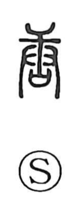

唐

Uncategorized
Kun: kara | On: tou
tang (china) ・ chinese-style ・ foreign ・ broad ・ empty ・ vain
Explanation
唐 is a compound of 庚 and 口. In the ancient forms, 庚 shows both hands wielding a mallet to thresh and polish grain; related graphs like 康—the source of 糠 “rice bran”—depict the chaff falling away in that process. The 口 here represents sai, a ritual receptacle that received written vows to the gods. From the scene of beating grain and stripping off the husk, the character first conveyed the idea of polishing and whitening. It later came to be used for senses such as broad and, by extension, empty or vain, and appears in compounds like 唐突 “abrupt.” In Japan it is read kara and marks things of continental origin—China and Korea—as in karaori (Chinese brocade), karakami (Chinese paper), and karamono (foreign goods).